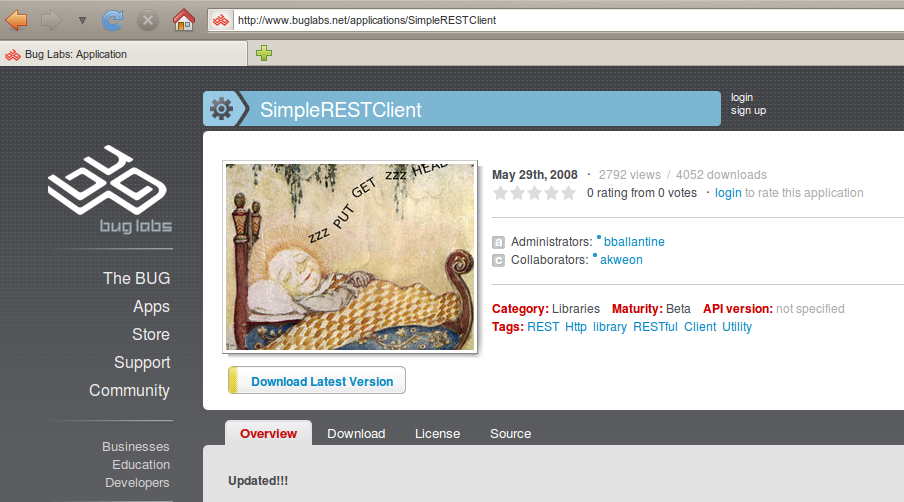
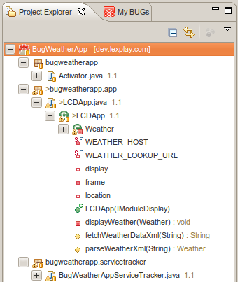
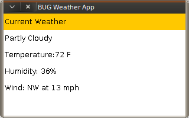

BugWeatherApp Part 3-Calling a REST Web Service
Contents |
Introduction
This is the third in a series of tutorials for the BugWeather app. In the first tutorial, we went through all the basic steps of creating an app and writing the basic code needed to interact with the BUGview2 LCD module. In the second one, we learned how to run the app on the BUG Simulator.
In this tutorial, we will finally get some real weather data in our app and display it in the BUG Simulator. To do this, we are going to use Google's secret and unofficial Weather API. Just because it's there.
Topics Covered
- Using the SimpleRESTClient to call remote web services
- Parsing XML using XPath
- More AWT Programming
Step-by-Step Guide
This is a step-by-step guide for calling a remote web service, parsing the XML response, and displaying the desired data in the BUG Simulator LCD. You can take a sneak peek at Google's weather API by hitting this URL: http://www.google.com/ig/api?weather=New+York,+NY. You can also add the country in the query string parameter if you need it, or you can just use a zip code (probably U.S. only).
SimpleRESTClient
Our first objective is to call a remote web service, so we need a client library for making URL connections. Before you start rolling your own java.net.URLConnection utilities, you should know that BUG already has a nice SimpleRESTClient library. It's pretty full-featured, and it's not heavy or obtuse like the Apache HttpClient.
In prior Dragonfly SDK versions, you had to get the library from BUGnet and add it to your Eclipse build properties. Here's the BUGnet link. However, I was pleasantly surprised to find that SimpleRESTClient is built into the current SDK. Still, it is useful to review the online docs for SimpleRESTClient to understand how to use it. While you are there, check out the other apps and libraries shared by the BUG community.

Create fetchWeatherDataXml method
Now it's time to revisit our BugWeatherApp code and implement the SimpleRESTClient. If you recall, the LCDApp class was responsible for displaying content on the LCD. So far, we have a bland title "Current Weather" displayed on-screen.
For convenience, we will add all of the code we need in this tutorial in the LCDApp class. The following is a copy of our new method. Note how the connection instance is created as a DefaultConnectionProvider.
protected String fetchWeatherDataXml(String location) throws Exception {
String xml = null;
String url = WEATHER_HOST + WEATHER_LOOKUP_URL + location;
System.out.println("url=" + url);
try {
IConnectionProvider connection = new DefaultConnectionProvider();
HTTPRequest request = new HTTPRequest(connection);
HTTPResponse response = request.get(url);
xml = response.getString();
System.out.println(xml);
return xml;
} catch (HTTPException e) {
throw e;
} catch (IOException e) {
throw e;
} catch (Exception e) {
throw e;
}
}
The static variables WEATHER_HOST and WEATHER_LOOKUP_URL are declared at the top of the class as:
private static final String WEATHER_HOST = "http://www.google.com"; private static final String WEATHER_LOOKUP_URL = "/ig/api?weather=";
Other Notes
- If you need to send username and password credentials in the request, take a look at the BasicAuthenticationConnectionProvider class.
- If you are expecting a larger volume of data in the HTTPResponse, you can also get an InputStream using response.getStream() instead of response.getString()
Parse the Weather XML Response
Assuming our fetchWeatherDataXml method works, we can go ahead and write the code to parse the XML.
Weather XML Format
Here's a truncated sample of the weather XML response returned by this url: http://www.google.com/ig/api?weather=New+York,+NY. Note that the primary information we are interested in is located in current_conditions element.

Create Weather class
Next, we should create a new class to hold the weather data that we extract from the XML. I chose to create an inner Weather class (at the bottom of LCDApp.class) that looks like this.
private class Weather {
// public fields because we don't need the noise
public String condition;
public String temp_f;
public String temp_c;
public String humidity;
public String icon;
public String wind;
}
Create parseWeatherXml method
Our parseWeatherXml method will take a String xml parameter and return a Weather object, so this is where the XML parsing happens. Again, we are happy to discover that the BUG SDK provides a simple implementation of a XML DOM parser. You can read more about it in this tutorial.
Here's the code:
protected Weather parseWeatherXml(String xml) throws Exception {
Weather weather = new Weather();
try {
XmlNode root = XmlParser.parse(xml);
XmlNode node = root.getChild("weather").getChild("current_conditions");
XmlNode dataNode = null;
if (node != null) {
// TODO: create helper method to read nodes, check nulls, get attribute
dataNode = node.getChild("condition");
weather.condition = dataNode.getAttribute("data");
dataNode = node.getChild("temp_f");
weather.temp_f = dataNode.getAttribute("data");
dataNode = node.getChild("temp_c");
weather.temp_c = dataNode.getAttribute("data");
dataNode = node.getChild("humidity");
weather.humidity = dataNode.getAttribute("data");
dataNode = node.getChild("icon");
weather.icon = dataNode.getAttribute("data");
dataNode = node.getChild("wind_condition");
weather.wind = dataNode.getAttribute("data");
} else {
System.out.println("current_conditions node not found");
}
} catch (IOException e) {
throw e;
} catch (Exception e) {
throw e;
}
return weather;
}
See Also: Tutorial:BUG_XML_HOWTO
Displaying the Weather Data
Previously, we had all the AWT code in the constructor and that is no longer practical. We need to do a bit of refactoring so that we can simply call a new method called displayWeather after we have fetched and parsed the weather xml data.
Create displayWeather method
Our new displayWeather method will take a Weather object as a parameter and execute the AWT code to render the content on the LCD display. We also want to organize the content better and make it somewhat pretty. Here, we chose to use a GridLayout instead of BorderLayout.
private void displayWeather(Weather weather) {
// Frame declared at beginning of the class
frame = display.getFrame();
frame.setBackground(Color.WHITE);
frame.setTitle("BUG Weather App");
frame.setVisible(true);
frame.setLayout(new GridLayout(6,2));
Label label1 = new Label();
label1.setText("Current Weather");
label1.setBackground(Color.ORANGE);
label1.setForeground(Color.BLACK);
frame.add(label1);
Label label2 = new Label();
label2.setText(weather.condition);
frame.add(label2);
Label label3 = new Label();
label3.setText("Temperature:" + weather.temp_f + " F");
frame.add(label3);
Label label4 = new Label();
label4.setText(weather.humidity);
frame.add(label4);
Label label5 = new Label();
label5.setText(weather.wind);
frame.add(label5);
}
Refactor the LCDApp constructor
Finally, it's time to revisit the LCDApp constructor and integrate our new methods. We can rip out all of the AWT code and just call our new methods now. Like this:
public LCDApp(IModuleDisplay display) {
super();
this.display = display;
try {
location = "New York, NY";
location = URLEncoder.encode(location, "UTF-8");
String xml = this.fetchWeatherDataXml(location);
if (xml != null) {
Weather weather = this.parseWeatherXml(xml);
this.displayWeather(weather);
}
} catch (Exception e) {
// TODO Display or log error
e.printStackTrace();
}
}
Build, Deploy and Test
At long last, we are ready to run the app in BUG Simulator. So far, we have added 3 methods and one inner class. In the Eclipse Project Explorer, your code base should look like this.

Updating MANIFEST.MF
If you went ahead and tried to run the app on the BUG Simulator, you may have crashed and burned discovered an OSGi configuration problem. Hint, it's one of the library dependencies that we added. Below is a copy of the updated and corrected MANIFEST.MF file. A new entry for com.buglabs.util.simplerestclient must be added (see last line). After you add this, you can deploy to the BUG Simulator using the Send to BUG menu command.
Manifest-Version: 1.0 Bundle-Name: BugWeatherApp Bundle-Activator: bugweatherapp.Activator Bundle-SymbolicName: BugWeatherApp Bundle-Version: 1.0.0 Bundle-Vendor: hlang Bug-Bundle-Type: Application BUG-API-Version: 1.4.4 Import-Package: com.buglabs.bug.base.pub, com.buglabs.bug.module.lcd.pub, org.osgi.framework, org.osgi.util.tracker, com.buglabs.application, com.buglabs.util, com.buglabs.util.simplerestclient
The Results
After adding the LCD module in the BUG Simulator (using the right-click menu and selecting BUG Simulator > Slot 1 > LCD), you will hopefully see something like this:

Not too shabby.
Extra Credit
If you feel like showing off, try out some of these extra credit features:
- Display the weather image icon for current weather conditions
- Display the weather forecast for the next few days
- Add form inputs to the display to let the user set the location.
- Periodically update the weather data.